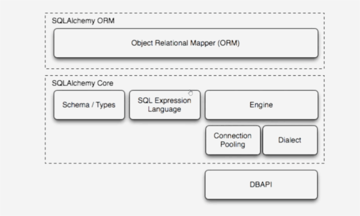
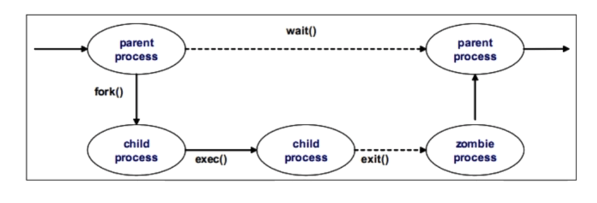

Python
Python概述及安装
Python简介
起源
- 贵铎·范·罗萨姆（Guido van Rossum）于1989年底始创了python
- 1991年初，python发布了第一个公开发行版
- 为了更好的完成荷兰的CWI（国家数学和计算机科学研究院）的一个研究项目而创建
版本
Python2.x
目前所有系统默认安装的版本
Python3.x
2009年2月13日发布
在语法和功能上有较大调整
Python的发展趋势
特点
- 高级：有高级的数据结构，缩短开发时间与代码量
- 面向对象：为数据和逻辑相分离的结构化和过程化添加了新的活力
- 可升级：提供了基本的开发模块，可以在它上面开发软件，实现代码的重用
- 可扩展：通过将其分离为多个文件或模块加以组织管理
- 可移植性：python是用C写的，又由于C的可移植性，使得python可以运行在任何带有ANSI C编译器的平台上
- 易学：python关键字少、结构简单、语法清晰
- 易读：没有其他语言通常用来访问变量、定义代码块和进行模式匹配的命令式符号
- 内存管理器：内存管理是由python解释器负责的
安装与配置
获取python3源码
官方站点
选择正确的系统
选择正确的版本
安装依赖包
1 | [root@python ~]# yum install -y gcc gcc-c++ zlib-devel openssl-devel readline-devel libffi-devel sqlite-devel tcl-devel tk-devel |
安装python3
1 | [root@python ~]# tar xf Python-3.9.16.tar.xz |
配置Python支持tab键补全
- 默认情况下，Python不支持按Tab键补全
1 | [root@python ~]# vim /usr/local/bin/tab.py |
vim实现python提示
120-打造vim为python IDE - 简书 (jianshu.com)
1 | (mypy) [root@python ~]$ mkdir -p ~/.vim/bundle/ |
配置Python IDE
Python虚拟环境
什么是虚拟环境
- 每个项目都需要安装很多库，当项目结束后这些库不需要了，该如何清理
- 在同一个系统中，需要同时安装两个模块的不同版本该如何实现
创建虚拟环境
- Python3中已经自带虚拟环境模块
venv - 将模块作为脚本文件执行，直接创建虚拟环境
1 | [root@python ~]# python3 -m venv ~/mypy |
Python IDE
什么是IDE
实际开发中，除编辑器是必须的，还需要很多其他辅助软件：
编辑器：用来编写代码，并且给代码着色，以方便阅读
代码提示器：输入部分代码，即可提示全部代码，加速代码的编写过程
调试器：观察程序的每一个运行步骤，发现程序的逻辑错误
项目管理工具：对程序涉及到的所有资源进行管理，如源文件、图片等
漂亮的界面：各种按钮、菜单、窗口等控件整齐排布，操作更方便
这些工具通常被打包在一起，同一发布和安装，统称为IDE（集成开发工具）
PyCharm简介
Pycharm是由JetBrains打造的一款Python IDE
支持的功能：
调试、语法高亮
Project管理、代码跳转
智能提示、自动完成
单元测试、版本控制
下载地址
需要图形化界面
1 | (mypy) [root@python ~]$ yum install java-1.8.0-openjdk -y |
PyCharm配置
配置界面风格
新建项目
添加项目解释器
添加Pycharm到菜单
应用程序–>杂项–>主菜单
1 | [root@python ~]$ yum install -y alacarte |
Python语法基础
Python运行方式
交互解释器
- 进入交互解释器
1 | [root@python ~]# source mypy/bin/activate |
- 退出交互解释器
1 | exit |
文件形式
- 明确指定解释器
1 | (mypy) [root@python ~]# which python |
- 赋予python文件可执行权限
1 | (mypy) [root@python ~]# chmod +x hi.py |
Python语法结构
语句块缩进
python代码块通过缩进对齐表达代码逻辑而不是使用大括号
缩进表达一个语句属于哪个代码块
缩进风格
1或2：可能不够，很难确定代码语句属于哪个块
8或10：可能太多，如果内嵌从层次太多，就会使得代码很难阅读
4个空格：非常流行，范·罗萨姆支持的风格
批量缩进，选中需要缩进的行按
Tab即可，向左缩进Shift + Tab
1 | if 3>0: |
- 缩进相同的一组语句构成一个代码块，称之为代码组
- 首行以关键字开始，以冒号
:结束，该行之后的一行或多行代码构成代码组 - 如果代码组只有一行，可以将其直接写在冒号后面，但是这样的写法可读性差，不推荐
1 | if 10 > 8: print("true") |
注释及续航
尽管Python是可读性最好的语言之一，这并不意味着程序员在代码中就可以不写注释
和很多UNIX脚本类似，python注释语句从
#字符开始注释可以在一行的任何地方开始，解释器会忽略掉该行
#之后的所有内容一行过长的语句可以使用反斜杠
\分解成几行批量注释
Ctrl + /，亦可批量取消注释
1 | a = 'hello world' + \ |
同行多个语句
- 分号
;允许你将多个语句写在同一行上 - 但是这些语句不能在这行开始一个新的代码块
- 因为可读性会变差，所以不推荐使用
输出语句
- 获取帮助
1 | help(print) |
- 使用方式
1 | print('hello world!') |
输入语句
- 获得帮助
1 | help(input) |
- 使用方式（注意，返回值一定是字符类型）
1 | num = input("Number: ") # input用于获取键盘输入 |
案例练习
模拟用户登录
- 创建名为login.py的程序文件
- 程序提示用户输入用户名
- 用户输入用户名后，打印欢迎用户的信息
1 | name = input("name: ") |
Python变量及运算符
python变量
变量定义
变量名称约定
第一个字符只能是大小写字母或下划线
后续字符只能是大小写字母或数字或下划线
区分大小写
python是动态类型语言，即不需要预先声明变量的类型
推荐采用的全名方法
变量名全部采用小写字母
简短、有意义
多个单词用下划线分隔
变量名用名词，函数名用谓词（动词+名词）
类名采用驼峰形式
1 | pystr = 'a' |
变量复制
- 变量的类型和值在赋值那一刻被初始化
- 变量赋值通过等号来执行
1 | counter = 0 |
- python也支持增量赋值
1 | n = 0 |
运算符
标准算数运算符
+ - * / // % **
1 | 5 / 3 # 除 |
比较运算符
< <= > >= == !=
1 | 2 < 3 |
逻辑运算符
and not or
1 | 5 > 3 and 10 > 5 #两者都为True，返回True |
数字和字符串
数字
基本数字类型
int：有符号整数
bool：布尔值
True：1
False：0
float：浮点数
complex：复数
1 | type(5) |
整数数字表示方式
- python默认以十进制数显示
- 数字以0o或0O开头表示8进制数
- 数字以0x或0X开头表示16进制数
- 数字以0b或0B开头表示2进制数
1 | 11 |
字符串
定义字符串
- python中字符串被定义为引号之间的字符集合
- python支持使用成对的单引号或双引号
- 无论单引号，还是双引号，表示意义相同
- python还支持三引号（三个连续的单引号或者双引号），可以用来包含特殊字符
- python不区分字符和字符串
1 | # 单引号中间还有单引号，可以转义 |
字符串切片
- 使用索引运算符
[]和切片运算符[:]可得到子字符串 - 第一个字符的索引是
0，最后一个字符的索引是-1 - 字符串包含切片中的起始下标，但不包含下标
1 | py_str = 'python' |
字符串连接操作
- 使用
+号可以将多个字符串拼接在一起 - 使用
*号可以将一个字符串重复多次
1 | py_str = 'python' |
- 判断字符是否在字符串中包含
1 | py_str |
列表、元组和字典
列表和元组
定义列表
- 可以将列表当初普通的“数组”，它能保存任意数量任意类型的python对象
- 像字符串一样，列表也支持下标和切片操作
- 列表中的项目可以改变
1 | alist = [10,20,"tom","jerry",[1,2]] |
列表操作
- 使用in或not in判断成员关系
- 使用append方法向列表中追加元素
1 | alist |
元组的定义及操作
- 可以认为元组是‘静态’的列表
- 元组一旦定义，不能改变
1 | atuple = (1,2,'tom','jerry') |
字典
字典的定义及操作
- 字典是由键-值（key-value）对构成的映射数据类型
- 通过键取值，不支持下标操作
1 | adict = {'name': 'bob','age': 20} |
数据类型比较
按存储模型分类
标量类型：数值、字符串
容器类型：列表、元组、字典
按更新模型分类
可变类型：列表、字典
不可变类型：数值、字符串、元组
1 | py_str = 'python' |
列表之间赋值
1 | alist = [10, 20, 30] |
按访问模型分类
直接访问：数值
顺序访问：字符串、列表、元组
映射访问：字典
判断语句
if语句
if语句语法结构
- 标准if条件语句的语法
1 | if expression: |
- 如果表达式的值非0或者为布尔值True，则代码组if_suite被执行，否则就去执行else_suite
- 代码组是一个python术语，它由一条或多条语句组成，表示一个子代码块
if语句实例解析
- 只要表达式数字为非零值即为
True
1 | if 10: |
- 空字符串、空列表、空元组，空字典的值均为
False
1 | if "": |
条件表达式
- python在很长一段时间里没有条件表达式（C？X:Y），或称三元运算符，因为范·罗萨姆一直拒绝加入这样的功能
- 从python2.5集成的语法确定为：X if C else Y
1 | a = 10 |
案例
- 提示用户输入用户名和密码
- 获取相关信息后，将其保存在变量中
- 如果用户输入的用户名为bob，密码为123456，则输出登录成功，否则输出登录失败
1 | user = input('username: ') |
扩展if语句
- 扩展if语句结构
1 | if expression1: |
判断语句案例
编写判断成绩的程序
- 创建grade.py脚本，根据用户输入的成绩分档，要求如下
- 如果成绩大于60分，输出‘及格’
- 如果成绩大于70分，输出‘良’
- 如果成绩大于80分，输出‘好’
- 如果成绩大于90分，输出‘优秀’
- 否则输出‘继续努力’
1 | grades = int(input('yours grades: ')) |
编写石头剪刀布小游戏
- 编写game.py，要求如下
- 计算机随机出拳
- 玩家自己决定如何出拳
- 代码尽量简化
1 | import random # 随机变量 |
while循环基础
循环语句基础
循环概述
- 一组被重复执行的语句称之为循环体，能否继续重复，决定循环的中止条件
- python中的循环有
while循环和for循环 - 循环次数未知的情况下，建议采用
while循环 - 循环次数可以预知的情况下，建议采用
for循环
while循环语法结构
- 当需要语句不断重复执行时，可以使用while循环
1 | while expression: |
- 语句
while_suite会连续不断的循环执行，直到表达式的值变为0或False
1 | sum100 = 0 |
案例
完善剪刀石头布小游戏，实现三局两胜
1 | import random |
while循环扩展语法
循环语句进阶
break语句
- break语句可以结束当前循环然后跳转到下条语句
- 写程序的时候，尽量避免重复的代码，在这种情况下可以使用
while-break结构
1 | name = input('username: ') |
continue语句
- 当遇到
continue语句时，程序会中止当前循环，并忽略剩余语句，然后回到循环的顶端 - 如果仍然满足循环条件，循环体内语句继续执行，否则退出循环
1 | result = 0 |
else语句
- python中
while语句也支持else子句 else子句只能循环完成后执行break语句也会跳过else块
1 | sum10 = 0 |
案例
猜数程序
- 系统随机生成100以内的数字
- 要求用户猜生成的数字大小
- 最多猜5次，猜对结束程序
- 如果5次全错，则输出正确结果
1 | import random |
for循环及range函数
for循环
for循环语法结构
- python中的
for接受可迭代对象（例如序列或迭代器）作为其参数，每次迭代其中一个元素
1 | for iter_var in iterable: |
- 与
while语句一样，支持break、continue、else语句 - 一般情况下，循环次数未知的情况下采用
while循环，循环次数已知采用for循环
1 | str = 'hello' |
range函数
for循环常与range函数一起使用range函数提供循环条件range函数的完整语法为：range(start,end,step = 1)
1 | range(10) |
示例
1 | sum = 0 |
案例
斐波那契数列
- 斐波那契数列就是某一个数，总是前两个数之和，比如：0，1，1，2，3，5，8
- 使用for循环和range函数编写一个程序，计算有10个数字的斐波那契数列
- 改进程序，要求用户输入一个数字，可以生成用户需要长度的斐波那契数列
1 | alist = [0,1] |
for循环练习与列表解析
列表解析
它是一个非常有用、简单、而且灵活的工具，可以用来动态的创建列表
语法：
[expr for iter_var in iterable]
这个语句的核心是for循环，它迭代iterable对象的所有条目
expr应用于序列的每个成员，最后的结果值是该表达式产生的列表
1 | [5] |
案例
九九乘法表
- 程序运行后，可以在屏幕上打印出九九乘法表
- 修改程序，由用户输入数字，可打印任意数字的乘法表
1 | for i in range(1,10): |
文件打开方法及读取
文件打开方法
open内建函数
作为打开文件的“钥匙”，内建函数
open()提供了初始化输入/输出（I/O）操作通用接口成功打开文件后会返回一个文件对象，否则引发一个错误
基本语法：
file_object = open(file_name, mode=’r’, buffering=-1)
文件对象访问模式
| 文件模式 | 操作 |
|---|---|
| r | 读方式打开（文件不存在则报错） |
| w | 以写方式打开（文件存在则清空，不存在则创建） |
| a | 以追加模式打开（必要时创建新文件） |
| r+ | 以读写模式打开（参见r） |
| w+ | 以读写模式打开（参见w） |
| a+ | 以读写模式打开（参见a） |
| b | 以二进制模式打开 |
文件输入
read方法
read()方法用来直接读取字节到字符串中，最多读取的给定数目个字节- 如果没有给定
size参数（默认值为-1）或者size值为负，文件将读取直至末尾
readline方法
- 读取打开文件的一行（读取下个行结束符之前的所有字节）
- 然后整行，包括行结束符，作为字符串返回
- 它也有一个
size参数，默认值为-1，代表读至行结束 - 如果提供了该参数，那么在超过
size个字节后会返回不完整的行
readlines方法
readlines()方法读取所有（剩余的）行然后把它们作为一个字符串列表返回
1 | (mypy) [root@python pycharm]# cp /etc/passwd /tmp/ |
其他类型的文件
1 | # 2进制 |
文件迭代
- 如果需要逐行处理文件，可以结合for循环迭代文件
- 迭代文件的方法于处理其他序列类型的数据类似
1 | f.close() |
写文件及文件指针
文件输出
write方法
write()内建方法功能与read()和readline()相反。它把含有文本数据或二进制数据块的字符串写入到文件中去- 写文件时，不会自动添加结束标准，需要程序员手工输入
1 | f.close() |
writelines方法
- 和
readlines()一样，writelines()方法是针对列表的操作 - 它接受一个字符串列表作为参数，将它们写入文件
- 行结束符不会自动被加入，所以如果有需要的话，必须在调用
writelines()前给每行结尾加上行结束符
1 | f.writelines(['hello world\n','python\n']) |
操作文件
with子句
with语句是用来简化代码的- 在将打开文件的操作放在
with语句中，代码块结束后，文件将自动关闭
1 | with open('/tmp/ls','rb') as f: |
文件内移动
seek(offset[,whence])：移动文件指针到不同的位置offset是相当于某个位置的偏移量whence的值，0表示文件开头，1表示当前位置，2表示文件结尾tell()：返回当前文件指针的位置
1 | f = open('/tmp/passwd','rb') # 若只用r打开，移动指针受限 |
案例：模拟cp操作
- 将/bin/ls“拷贝”到/tmp/目录下
- 不要修改原始文件
1 | src_fname = '/bin/ls' |
函数基础
函数基本操作
函数的基本概念
- 函数是对程序逻辑进行结构化或过程化的一种编程方法
- 将整块代码巧妙的隔离成易于管理的小块
- 把重复代码放到函数中而不是进行大量的拷贝，这样既能节省空间，也有助于保持一致性
- 通常函数都是用于实现某一种功能
创建函数
- 函数是用
def语句来创建的，语法如下：
1 | def function_name(arguments): |
- 标题行由
def关键字，函数的名字，以及参数的集合（如果有的话）组成 def子句的剩余部分包括了一个虽然可选但是强烈推荐的文档字串，和必需的函数体
调用函数
- 同大多数语言相同，python用一对圆括号调用函数
- 如果没有加圆括号，只是对函数的引用
1 | def foo(): |
函数的返回值
- 多数情况下，函数并不直接输出数据，而是向调用者返回值
- 函数的返回值使用
return关键字 - 没有
return的话，函数默认返回None
1 | def foo(): |
案例：斐波那契数列函数
- 将斐波那契数列代码改为函数
- 数列长度由用户指定
- 要求返回结果用return返回
1 | def fbnqsl(): |
函数参数
定义参数
形式参数
函数定义时，紧跟在函数名后（圆括号内）的参数成为形式参数，简称形参。由于它不是实际存在的变量，所以又称为虚拟变量
实际参数
在主调函数中调用一个函数时，函数名后面括弧中的参数（可以是一个表达式）称为“实际参数”，简称实参
传递参数
- 调用函数时，实参的个数需要与形参个数一致
- 实参将依次传递给形参
1 | def foo(x,y): # x y 形参 |
斐波那契数列函数优化
1 | def fbnqsl(x): |
位置参数
- 与
shell脚本类似，程序名以及参数都以位置参数的方式传递给python程序 - 使用
sys模块的argv列表接收
1 | (mypy) [root@python ~]# vim ceshi.py |
默认参数
- 默认参数就是声明了默认值的参数
- 因为给参数赋予了默认值，所以在函数调用的时候，不向该参数传入值也是允许的
1 | def pstar(num = 30): |
案例：复制文件函数
- 修改文件练习中的拷贝程序
- 将程序改为函数形式
- 源文件和目标文件要求通过参数形式传递
- 实参要求来自于命令行
1 | import sys |
模块基础
定义模块
模块基本概念
- 模块是从逻辑上组织python代码的形式
- 当代码量变得相当大的时候，最好把代码分出一些有组织的代码段，前提是保证它们的彼此交互
- 这些代码片段相互间有一定的联系，可能是一个包含数据成员和方法的类，也可能是一组相关但彼此独立的操作函数
创建模块
- 模块物理层面上组织的方法是文件，每一个以
.py结尾的python文件都是一个模块 - 模块名称切记不要与系统中已存在的模块重名
- 模块文件名字去掉后面的扩展名（.py）即为模块名
导入模块（import）
- 使用
import导入模块 - 模块属性通过“模块名.属性”的方法调用
- 如果仅需要模块中的某些属性，也可以单独引用
1 | import sys |
模块加载（load）
- 一个模块只能被加载一次，无论它被导入多少次
- 只加载一次可以阻止多重导入时代码被多次执行
- 如果两个文件相互导入，防止了无限的相互加载
- 模块加载时，顶层代码会自动执行，所以只将函数放入模块的顶层是良好的编程习惯
案例：创建模块
- 创建star模块
- 模块中包含一个变量hi值为Hello World!
- 模块中包含一个函数pstar，默认打印30个星号
- 模块中包含文档字符串
- 调用模块，测试功能
1 | """演示模块 |
模块特性及案例
模块特性
模块导入的特性
- 模块具有一个
__name__特殊属性（双下划线） - 当模块文件直接执行时，
__name__的值为__main__ - 当模块被另一个文件导入时，
__name__的值就是该模块的名字
1 | (mypy) [root@python pycharm]# vim foo.py |
案例
生成随机密码
- 创建randpass.py脚本，要求如下：
- 编写一个能生成8位随机密码的程序
- 使用random的choice函数随机取出字符
- 改进程序，用户可以自己决定生成多少位的密码
1 | import random |
shutil模块
复制和移动
shutil.copy(src,dst,*,follow_symlinks=True)
将文件
src复制到文件或目录dst。src和dst应为字符串。如果dst指定目录，则文件将使用src的基本文件名复制到dst中。返回新创建的文件的路径shutil.copy2(src,dst,*,follow_symlinks=True)
与
copy()相同，但copy2()也尝试保留所有文件元数据shutil.move(src,dst,copy_function=copy2)
递归的将文件或目录
src移动到另一个位置dst，并返回目标
1 | import shutil |
目录操作
shutil.copytree(src,dst,symlinks=False,ignore=None,copy_function=copy2,ignore_dangling_symlinks=False)
递归的复制以
src为根的整个目录树，返回目标目录。由dst命名的目标目录不能已经存在shutil.retree(path,ignore_errors=False,onerror=None)
删除整个目录树，路径必须指向目录（而不能是指向目录的符号链接）
shutil模块没有提供删除文件的函数
1 | shutil.copytree('/etc/security','/tmp/security') |
权限管理
shutil.copymode(src,dst,*,follow_symlinks=True)
将权限从
src复制到dst。文件内容，所有者和组不受影响。src和dst是以字符串类似给出的路径shutil.copystat(src,dst,*,follow_symlinks=True)
将权限位，最后访问时间，上次修改的时间和标志从
src复制到dstshutil.chown(path,user=None,group=None)
更改给定路径的所有者
用户和/或组
1 | (mypy) [root@python ~]# ll /tmp/zj.txt |
subprocess模块
概述
subprocess模块主要用于执行系统命令subprocess模块允许你产生新的进程，连接到它们的输入/输出/错误管道，并获得它们的返回代码- 本模块旨在替换几个较早的模块和功能，如
os.system、os.spawn*
run方法
subprocess.run方法在python3.5引入。早期版本可以使用subprocess.call方法- 直接执行命令
1 | import subprocess |
- 通过shell执行命令
1 | subprocess.run('ls /home'，shell=True) |
- run方法返回值
1 | result = subprocess.run('ls /home',shell=True) |
输出和错误
- run方法执行的结果默认打印在屏幕上，也可以通过管道将其存储在标准输出和标准错误中
1 | result = subprocess.run('id root; id zhangsan',s |
案例：调用ping命令
- 编写ping函数
- 用于测试远程主机联通性
- ping通显示：x.x.x.x:up
- ping不通显示：x.x.x.x:down
1 | import subprocess |
python语法风格和模块结构布局
语法风格
变量赋值
python支持链式多重赋值
x = y = 10
另一种将多个变量同时赋值的方法称为多元赋值，采用这种方式赋值时，等号两边对象都是元组
a,b = 10,20
合法标识符
- python标识符字符串规则和其他大部分用c语言编写的高级语言相似
- 第一个字符必须是字母或下划线
_ - 剩下的字符可以是字母和数字和下划线
- 大小写敏感
关键字
- 和其他的高级语言一样，python也有一些被称作关键字的保留字符
- 任何语言的关键字应该保持相对的稳定，但是因为python是一门不断成长和进化的语言，其关键字偶尔会更新
- 关键字列表和
iskeyword()函数都放入了keyword模块以便查阅
内键
- 除了关键字之外。python还有可以在任何一级代码使用的“内建”的名字集合，这些名字可以由解释器设置或使用
- 虽然
built-in不是关键字，但是应该把它当作“系统保留字”
模块结构及布局
1 | #!/usr/local/bin/python3 # 起始行 |
模块布局案例
案例：测试字符串是否为合法标识符
- 编写用于测试字符串的函数
- 函数用于确定字符串是否为合法标识符
- 字符串不能为关键字
1 | import sys |
案例：创建文件
- 编写一个程序，要求用户输入文件名
- 如果文件已经存在，要求用重新输入
- 提示用户输入数据，每行数据先写到列表中
- 将列表中数据写入用户输入的文件名中
1 | import os |
序列对象及字符串格式化
序列
序列类型操作符
| 序列操作符 | 作用 |
|---|---|
| seq[ind] | 获得下标为ind的元素 |
| seq[ind1:ind2] | 获得下标从ind1到ind2间的元素集合 |
| seq * expr | 序列重复expr次 |
| seq1 + seq2 | 连接序列seq1和seq2 |
| obj in seq | 判断obj元素是否包含在seq中 |
| obj not in seq | 判断obj元素是否不包含在seq中 |
内建函数
| 函数 | 含义 |
|---|---|
| list(iter) | 把可迭代对象转换为列表 |
| str(obj) | 把obj对象转换为字符串 |
| tuple(iter) | 把一个可迭代对象转换为一个元组 |
1 | list('hello') |
内建函数
- len(seq)：返回seq的长度
- enumerate：接受可迭代对象作为参数，返回一个enumerate对象
- reversed(seq)：接受序列作为参数，返回一个以逆序访问的迭代器
- sorted(iter)：接受可迭代对象作为参数，返回一个有序的列表
1 | user = ['tom','jerry','bob','alice'] |
字符串
字符串操作符
- 比较操作符：字符串大小按ASCII码值大小进行比较
- 切片操作符：[]、[:]、[::]
- 成员关系操作符：in、not in
格式化操作符
- 字符串可以使用格式化符号来表示特定含义
| 格式化字符 | 转换方式 |
|---|---|
| %c | 数字转换成字符 |
| %s | 优先用str()函数进行字符串转换 |
| %d / %i | 转换成有符号十进制数 |
| %o | 转换成无符号八进制数 |
| %e / %E | 转换成科学计数法 |
| %f / %F | 转换成浮点数 |
- 字符串可以使用格式化符号来表示特定含义
| 辅助指令 | 作用 |
|---|---|
| * | 定义宽度或小数点精度 |
| - | 左对齐 |
| + | 在正数前面显示加号 |
| 在正数前面显示空格 | |
| # | 在八进制数前面显示零0，在十六进制前面显示‘0x’或者‘0X’ |
| 0 | 显示的数字前面填充0而不是默认的空格 |
1 | '%s is %s years old' % ('tom',20) |
原始字符串操作
- 原始字符串操作符是为了对付那些在字符串中出现的特殊字符
- 在原始字符串里，所有的字符都是直接按照字面意思来使用，没有转义特殊或不能打印的字符
1 | win_path = 'c:\tmp' |
案例：创建用户
- 编写一个程序，实现创建用户的功能
- 提示用户输入用户名
- 随机生成8位密码
- 创建用户并设置密码
- 将用户相关信息写入指定文件
1 | # 之前写的随机密码 randpass.py |
字符串
字符串常用方法
string.capitalize()：把字符串的第一个字符大写string.center(width)：返回一个元字符居中，并且使用空格填充至长度width的新字符串string.count(str,beg=0,end=len(strint))：返回str在string里面出现的次数，如果beg或者end指定则返回指定范围内str出现的次数
1 | s = 'hello world!' |
内建函数
string.endswith(obj,beg=0,end=len(string))：检查字符串是否以obj结束，如果beg或者end指定则检查指定的范围内是否以obj结束，如果是，返回True，否则返回Falsestring.islower()：如果string中包含至少一个区分大小写的字符，并且所有这些字符都是小写，则返回True，否则返回Falsestring.strip()：删除string字符两端的空白string.upper()：转换string中的小写字母为大写string.split(str="",num=string.count(str))：以str为分隔符切片string，如果num有指定值，则仅分割num个字符串
1 | s |
列表和元组
列表
创建及访问列表
- 列表是有序、可变的数据类型
- 列表中可以包含不同类型的对象
- 列表可以由
[]或工厂函数创建 - 支持下标及切片操作
更新列表
- 通过下标只能更新值，不能使用下标添加新值
1 | alist = [10,35,20,80] |
列表常用方法
| 列表方法 | 操作 |
|---|---|
| list.append(obj) | 向列表中添加一个对象obj |
| list.count(obj) | 返回一个对象obj在列表中出现的次数 |
| list.extend(seq) | 把序列seq的内容添加到列表中 |
| list.insert(index,obj) | 向索引量为index的位置插入对象obj |
| list.reverse() | 原地翻转列表 |
| list.sort() | 排序 |
1 | alist |
元组
创建元组
- 通过
()或工厂函数tuple()创建元组 - 元组是有序的、不可变类型
- 与列表类似，作用于列表的操作，绝大多数可以作用于元组
1 | atuble = (10,20,30,7) |
单元素元组
- 如果一个元组中只有一个元素，那么创建该元组的时候，需要加一个逗号
1 | btuple = ('hello') # 不加逗号，就是一个字符串 |
列表案例
用列表构建栈结构
- 栈是一个后进先出的结构
- 编写一个程序，用列表实现栈结构
- 需要支持压栈、出栈、查询功能
1 | stack = [] |
字典及常用方法
字典基础操作
创建字典
- 通过
{}操作符创建字典 - 通过
dict()工厂方法创建字典 - 通过
fromkeys()创建具有相同值的默认字典
1 | adict = {'name': 'bob', 'age': 23} |
访问字典
- 字典是映射类型，意味着它没有下标，访问字典中的值需要使用相应的键
1 | for key in adict: |
更新字典
- 通过键更新字典
- 如果字典中有该键，则更新相关值；没有该键，则向字典中添加新值
1 | adict |
删除字典
- 通过
del可以删除字典中的元素或整个字典 - 使用内部方法
clear()可以清空字典；pop()方法“弹出”字典中的元素
1 | adict |
字典操作符
- 使用字典键查找操作符
[]，查找键所对应的值 - 使用
in或not in判断键是否存在于字典中
1 | adict = {'name': 'bob', 'age': 23} |
字典相关函数
作用于字典的函数
len()：返回字典中元素的数目hash()：不是为字典设计，可以判断对象是否可以作为字典的键
1 | adict |
字典方法
dict.copy()：返回字典的副本dist.get(key,default=None)：对字典dict中的键key，返回它对应的值value，如果字典中不存在此键，则返回default的值dict.setdefault(key,default=None)：如果字典不存在key键，由dict[key]=default为它赋值dict.items()：返回一个包含字典中的（键，值）对元组的列表dict.keys()：返回一个包含字典中键的列表dict.values()：返回一个包含字典所有值的列表dict.update(dict2)：将字典dict2的键-值对添加到字典dict
1 | adict |
字典案例
案例：模拟用户登录信息系统
- 支持新用户登录，新用户名和密码注册到字典中
- 支持老用户登录，用户名和密码正确提示登录成功
- 主程序通过循环询问进行何种操作，根据用户的选择，执行注册或是登录操作
1 | import getpass |
集合及常用方法
集合基础
创建集合
数学上，把
set称作由不同元素组成的集合，集合(set)的成员通常被称作集合元素集合对象是一组无序列的可哈希的值
集合有两种类型
可变集合
set不可变集合
frozenset
1 | s1 = set('hello') |
集合操作符
- 集合支持用
in和not in操作符检查成员 - 能够通过
len()检查集合大小 - 能够使用
for迭代集合成员 - 不能取切片
1 | 'h' in s1 |
|：联合，取并集&：交集-：差补
1 | s1 = set('abc') |
集合方法
集合常用方法
set.add()：添加成员set.update()：批量添加成员set.remove()：移除成员
1 | s1.add('new') # 把字符串当作一个元素 |
s.issubset(t)：如果s是t的子集，则返回True，否则返回Falses.issuperset(t)：如果t是s的超集，则返回True，否则返回Falses.union(t)：返回一个新集合，该集合是s和t的并集s.intersection(t)：返回一个新集合，该集合是s和t的交集s.difference(t)：返回一个新集合，该集合是s的成员，但不能是t的成员
1 | aset = set('abcde') |
集合案例
案例：去重
- 创建一个具有20个随机数字的列表
- 去除列表中重复的数字
1 | from random import randint |
案例： 比较文件内容
- 有两个文件：a.log和b.log
- 两个文件中有大量重复内容
- 取出只有在b.log中存在的行
1 | (mypy) [root@python pycharm]# cp /etc/passwd /tmp/a.log |
time模块
时间表示方式
- 时间戳
timestamp：表示的是从1970年1月1日00:00:00开始按秒计算的偏移量 UTC（Coordinated Universal Time，世界协调时）亦即格林威治天文时间，世界标准时间。在中国为UTC+8。DST（Daylight Saving Time）即夏令时- 元组（struct_time）：由9个元素组成
struct_time元组
| 索引 | 属性 | 值 |
|---|---|---|
| 0 | tm_year | 2000 |
| 1 | tm_mon | 1-12 |
| 2 | tm_mday | 1-31 |
| 3 | tm_hour | 0-23 |
| 4 | tm_min | 0-59 |
| 5 | tm_sec | 0-61 |
| 6 | tm_wday | 0-6(0表示周一) |
| 7 | tm_yday(一年中的第几天) | 1-366 |
| 8 | tm_isdst(是否为dst时间) | 默认为-1 |
time模块方法
time.localtime([secs])：将一个时间戳转换为当前时区的struct_time。secs未提供，则以当前时间为准time.gmtime([secs])：和localtime()方法类似，gmtime()方法是将一个时间戳转换为UTC时区（0时区）的struct_timetime.time()：返回当前时间的时间戳time.mktime(t)：将一个struct_time转化为时间戳time.sleep(secs)：线程推迟指定的时间运行。单位为秒time.asctime([t])：把一个时间的元组或者struct_time表示为这种形式：‘Sun Jun 20 23:23:05 1993’ 。如果没有参数，将会将time.localtime()作为参数传入time.ctime([secs])：把一个时间戳（按秒计算的浮点数）转换为time.asctime()形式
1 | import time |
time.strftime(format[,t])：把一个代表时间的元组或者struct_time（如由time.localtime()和time.gmtime()返回）转化为格式化的时间字符串。如果t未指定，将传入time.localtime()time.strptime(string[,format])：把一个格式化时间字符串转化为struct_time。实际上它与strftime()是逆操作
时间样式
| 格式 | 含义 | 格式 | 含义 |
|---|---|---|---|
| %a | 本地简化星期名称 | %m | 月份(01-12) |
| %A | 本地完整星期名称 | %M | 分钟数(00-59) |
| %b | 本地简化月份名称 | %p | 本地am或者pm的相应符 |
| %B | 本地完整月份名称 | %S | 秒(01-61) |
| %c | 本地相应的日期和时间 | %U | 一年中的星期数(00-53,星期日是一个星期的开始) |
| %d | 一个月中的第几天(01-31) | %w | 一个星期中的第几天(0-6,0是星期天) |
| %H | 一天中的第几个小时(24小时制，00-23) | %x | 本地相应日期 |
| %I | 第几个小时(12小时制，01-12) | %X | 本地相应时间 |
| %j | 一年中的第几天(001-336) | %y | 去掉世纪的年份(00-59) |
| %Z | 时区的名字 | %Y | 完整的年份 |
案例：编写进度条
- 模拟一个进度条程序
- 首先在屏幕上打印一行#
- @符号在这行#号中穿过去
- 当@符号到达尾部，再返回开头
1 | import time |
datetime模块
datetime模块方法
datetime.today()：返回一个表示当前本地时间的datetime对象datetime.now([tz])：返回一个表示当前本地时间的datetime对象，如果提供了参数tz，则获取tz参数所指时区的本地时间datetime.strptime(date_string, format)：将格式字符串转换为datetime对象datetime.ctime(datetime对象)：返回时间格式字符串datetime.strftime(format)：返回指定格式字符串
1 | from datetime import datetime |
时间计算
- 使用
timedelta可以方便的在日期上做天days，小时hours，分钟，秒，毫秒，微秒的时间计算
1 | import datetime |
案例：取出指定时间段的文本
- 有一个日志文件，按时间先后顺序记录日志
- 给定时间范围，取出该范围内的日志（9点–12点）
1 | (mypy) [root@python pycharm]# vim /tmp/myweb.log |
异常处理
异常
当python检测到一个错误时，解释器就会指出当前流已经无法继续执行下去，这时候就出现了异常
异常是因为程序出现了错误而在正常控制流以外采取的行动
这个行为又分为两个阶段：
首先是引起异常发生的错误
然后是检测（和采取可能的措施）阶段
python中的异常
- 当程序运行时，因为遇到未解的错误而导致中止运行，便会出现
traceback消息，打印异常
| 异常 | 描述 |
|---|---|
| NameError | 未声明/初始化对象 |
| IndexError | 序列中没有此索引 |
| SyntaxError | 语法错误 |
| KeyboardInterrupt | 用户中断执行 |
| EOFError | 没有内建输入，到达EOF标记 |
1 | a + 5 |
try-except语句
- 定义了进行异常监控的一段代码，并且提供了处理异常的机制
1 | try: |
- 可以把多个
except语句连接在一起，处理一个try块中可能发生的多种异常
1 | try: |
异常参数
- 异常也可以有参数，异常引发后它会传递给异常处理器
- 当异常被引发后参数是作为附加帮助信息传递给异常处理器的
1 | try: |
else语句
- 在
try范围中没有异常被检测到时，执行else子句 - 在
else范围中的任何代码运行前，try中的所有代码必须完全成功
1 | try: |
finally子句
finally子句是无论异常是否发生，是否捕捉都会执行的一段代码- 如果打开文件后，因为发生异常导致文件没有关闭，可能会发生数据损坏。使用
finally可以保证文件总是能正常的关闭
1 | try: |
案例：简化除法判断
- 提示用户输入一个数字作为除数
- 如果用户按下Ctrl+C或Ctrl+D则退出程序
- 如果用户输入非数字字符，提示用户应该输入数字
- 如果用户输入0，提示用户0不能作为除数
1 | try: |
自定义异常
触发异常
raise语句
- 想要引发异常，最简单的形式就是输入关键字
raise，后面跟要引发的异常的名称 - 只从
raise语句时，Python会创建指定的异常类的一个对象 raise语句还可以指定对异常对象进行初始化的参数
1 | raise ValueError() |
断言
- 断言是一句必须等价于布尔值为真的判定
- 此外，发生异常也意味着表达式为假
1 | assert 10 > 100, "Wrong" |
案例：自定义异常
- 编写第一个函数，函数接收姓名和年龄，如果年龄不在1-120之间，产生ValueError异常
- 编写第二个函数，函数接受姓名和年龄，如果年龄不在1-120之间，产生断言异常
1 | def get_info1(name,age): |
os模块
os模块简介
- 对文件系统的访问大多数通过python的
os模块实现 - 该模块是python访问操作系统功能的主要接口
- 有些方法，如
copy等，并没有提供，可以使用shutil模块作为补充
os模块方法
| 函数 | 作用 |
|---|---|
| symlink() | 创建符号链接 |
| listdir() | 列出指定目录的文件 |
| getcwd() | 返回当前工作目录 |
| mkdir() | 创建目录 |
| chmod() | 改变权限模式 |
1 | import os |
案例：操作文件系统
- 编写脚本
- 切换到/tmp目录下
- 创建example目录
- 切换到/tmp/example目录
- 创建test文件，并写入字符串foo bar
- 列出/tmp/example目录内容
- 打印test文件内容
- 反向操作，把test文件以及example目录删除
1 | import os |
pickle模块及案例
pickle模块
- 把数据写入文件时，常规的文件方法只能把字符串对象写入。其他数据需要先转换成字符串再写入文件
- python提供了一个标准的模块，称为
pickle。使用它可以在一个文件中存储任何python对象，之后又可以把它完整无缺的取出来
1 | f = open('/tmp/a.data','w') |
pickle模块方法
- 分别调用
dump()和load()可以存储、写入
1 | import pickle |
案例：记账程序
- 假设在记账时，有一万块钱
- 无论时开销还是收入都要进行记账
- 记账内容包括时间、金额和说明
- 记账数据要求永久存储
1 | import os |
函数进阶
创建函数
def语句
- 创建函数用def语句创建，语法如下：
1 | def function_name(arguments): |
- 标题行由
def关键字、函数的名字，以及参数的集合（如果有的话）组成 def子句的剩余部分包括了一个虽然可选但是强烈推荐的文档字串，和必须的函数体
前向引用
- 函数不允许在函数为声明之前对其进行引用或者调用
1 | def foo(): |
调用函数
函数操作符
- 使用一对圆括号()调用函数，如果没有圆括号，只是对函数的引用
- 任何输入的参数都必须放置在括号中
1 | def foo(): |
关键字参数
- 关键字参数的概念仅仅针对函数的调用
- 这种理念是让调用者通过函数调用中的参数名字来区分参数
- 这样规范允许参数缺失或者不按顺序
1 | def get_info(name,age): |
参数组
- python允许程序员执行一个没有显示定义参数的函数
- 相应的方法是通过一个把元组（非关键字参数）或字典（关键字参数）作为参数组传递给函数
1 | func(*tuple_grp_nonkw_args,**dict_grp_kw_args) |
案例：简单的加减法数学游戏
- 随机生成两个100以内的数字
- 随机选择加法或是减法
- 总是使用最大的数字减去最小的数字
- 如果用户答错三次，程序给出正确答案
1 | import random |
匿名函数
lambda
- python允许用
lambda关键字创造匿名函数 - 匿名函数是因为不需要以标准的
def方式来声明 - 一个完整的
lambda“语句”代表了一个表达式，这个表达式的定义体必须和声明放在同一行
1 | lambda [arg1[,arg2,...argN]]: expression |
filter()函数
filter(func,seq)：调用一个布尔函数func来迭代遍历每个序列中的元素；返回一个使func返回值为true的元素序列- 如果布尔函数比较简单，直接使用
lambda匿名函数就显得非常方便了
1 | filter(函数, 列表) |
map()函数
map(func,seq)：调用一个函数func来迭代遍历每个序列中的元素；返回一个经过func处理过的元素序列
1 | data = map(lambda x: x * 2 + 1, [num for num in range(10)]) |
reduce()函数
reduce(func,seq)：调用一个函数func来迭代遍历每个序列中的元素；返回一个经过func处理后得到的结果
1 | from functools import reduce |
案例：修改数学游戏程序
- 将数学运算改为匿名函数形式
1 | import random |
变量作用域及偏函数
变量作用域
全局变量
- 标识符的作用域是定义为其声明在程序里的可引用范围，也就是变量的可见性
- 在一个模块中最高级别的变量有全局作用域
- 全局变量的一个特征是除非被删除掉，否则它们能存活到脚本运行结束，且对于所有的函数，它们的值都是可以被访问的
局部变量
局部变量只是暂时的存在，仅仅只依赖于定义它们的函数现阶段是否处于活动
当一个函数调用出现时，其局部变量就进入它们的作用域。在那一刻，一个新的局部变量名就为那个对象创建了
一旦函数完成，框架被释放，变量就会离开作用域
如果局部与全局有相同名称的变量，那么函数运行时，局部变量的名称将会把全局变量名称遮盖住
1 | x = 4 |
global语句
- 因为全局变量的名字能被局部变量给遮盖掉，所以为了明确的引用一个已命名的全局变量，必须使用
global语句
1 | x = 4 |
函数式编程
偏函数
- 偏函数的概念是将函数式编程的概念和默认参数以及可变参数结合在一起
- 一个带有多个参数的函数，如果其中某些参数基本上固定的，那么就可以通过偏函数为这些参数赋值
- 通过
partial来改造另外一个函数，把某一些参数固定，生成新函数
1 | from functools import partial |
案例：创建进制转换函数
- 修改int函数，生成的新函数int2可以转换成2进制数据
- 修改int函数，生成的新函数int8可以转换成8进制数据
- 修改int函数，生成的新函数int16可以转换成16进制数据
1 | from functools import partial |
递归函数
递归函数
- 如果函数包含了对其自身的调用，该函数就是递归的
- 在操作系统中，查看某一目录内所有文件等操作都是递归的应用
1 | def func(num): |
案例：快速排序
- 随机生成10个数字
- 利用递归，实现快速排序
1 | from random import randint |
生成器
生成器
- 从句法上讲，生成器是一个带
yield语句的函数 - 一个函数或者子程序只返回一次，但一个生成器能暂停执行并返回一个中间的结果
yield语句返回一个值给调用者并暂停执行- 当生成器的
next()方法被调用的时候，它会准确的从离开地方继续
1 | def mygen(): |
生成器表达式
- 生成器的另一种形式是生成器表达式
- 生成器表达式的语法与列表解析一样
1 | from random import randint |
案例：文件生成器
- 通过生成器完成以下功能：
- 使用函数实现生成器
- 函数接受一个文件对象作为参数
- 生成器函数每次返回文件的10行数据
1 | def file(fobj): |
模块详解
模块和文件
什么是模块
- 模块支持从逻辑上组织python代码
- 当代码量变得相当大的时候，最好把代码分出一些有组织的代码段
- 代码片段相互间有一定的联系，可能是一个包含数据成员和方法的类，也可能是一组相关但彼此独立的操作函数
- 这些代码是共享的，所以python允许“调用”一个模块，允许使用其他模块的属性来利用之前的工作成果，实现代码重用
模块文件
- 说模块是安装逻辑来组织python代码的方法，文件是物理层上组织模块的方法
- 一个文件被看作是一个独立模块，一个模块也可以被看作是一个文件
- 模块的文件名就是模块的名字加上扩展名
.py
搜索路径
- 模块的导入需要一个叫做“搜索路径”的过程
- python在文件系统“预定义区域”中查找要调用的模块
- 搜索路径在
sys.path中定义 - 也可以通过
PYTHONPATH环境变量引入自定义目录
1 | import sys |
内置模块
tarfile模块
tarfile模块允许创建、访问tar文件- 同时支持
gzip、bzip2格式
1 | import tarfile |
hashlib模块
hashlib用来替换md5和sha模块，并使它们的API一致，专门提供hash算法- 包括
md5、sha1、sha224、sha256、sha384、sha512，使用非常简单方便
1 | import hashlib |
案例：计算文件md5值
- 编写用于计算文件md5值的脚本
- 文件名通过位置参数获得
- 打印出文件md5值
1 | import sys |
模块作业讲解
案例：备份程序
- 需要支持完全备份和增量备份
- 周一执行完全备份
- 其他时间执行增量备份
- 备份文件需要打包为tar文件并使用gzip格式压缩
1 | # 需要拼接出文件名 |
函数文件
1 | import os |
OOP基础
OOP基础
基本概念
- 类（Class）：用来描述具有相同的属性和方法的对象的集合。它定义了该集合中每个对象所共有的属性和方法。对象是类的实例
- 实例化：创建一个类的实例，类的具体对象
- 方法：类中定义函数
- 对象：通过类定义的数据结构实例。对象包括两个数据成员（类变量和实例变量）和方法
创建类
- 使用class语句来创建一个新类，class之后为类的名称并以冒号结尾
- 类名建议使用驼峰形式
1 | class BearToy: |
创建实例
- 类是蓝图，实例时根据蓝图创建出来的具体对象
1 | tidy = BearToy() |
绑定方法
构造器方法
- 当实例化类的对象时，构建器方法默认自动调用
- 实例本身作为第一个参数，传递给
self
1 | class BearToy: |
其他绑定方法
- 类中定义的方法需要绑定在具体的实例，由实例调用
- 实例方法需要明确调用
1 | class BearToy: |
案例：编写游戏人物
- 创建游戏角色类
- 游戏人物角色拥有名字、武器等属性
- 游戏任务具有攻击和行走的方法
- 武器通过武器类实现
1 | class Role: |
组合和派生
组合
什么是组合
- 类被定义后，目标就是要把它当成一个模块来使用，并把这些对象嵌入到你的代码中去
- 组合就是让不同的类混合并加入到其他来中来增加功能和代码重用性
- 可以在一个大点的类中创建其他类的实例，实现一些其他属性和方法来增强对原来的类对象
组合应用
- 两个类明显不同
- 一个类是另一个类的组件
1 | class Manufacture: |
子类
创建子类
当类之间有显著的不同，并且较小的类是较大的类所需要的组件时组合表现很好，但当设计“相同的类但是有一些不同的功能”时，
派生就是一个更加合理的选择了OOP的更强大方面之一是能够使用一个已经定义好的类，扩展它或者对其进行修改，而不会影响系统中使用现存类的其他代码片段
OOP（面向对象设计）允许类特征在子孙类或子类中进行传承
创建子类只需要在圆括号中写明从哪个父类继承即可
1 | class BearToy: |
继承
- 继承描述了基类的属性如何“遗传”给派生类
- 子类可以继承它的基类的任何属性，不管是数据属性还是方法
1 | class BearToy: |
通过继承覆盖方法
- 如果子类中有和父类同名的方法，父类方法将被覆盖
- 如果需要访问父类方法，则要调用一个未绑定的父类方法，明确给出子类的实例
1 | class BearToy: |
多重继承
- python允许多重继承，即一个类可以是多个父类的子类，子类可以拥有所有父类的属性
1 | class A: |
案例：修改游戏人物
- 增加武器类，使武器是人物的一个属性
- 创建法师和战士类，他们派生于相同的一个基类
1 | class Role: |
类的特殊方法
魔法方法
magic基础
- 在python中，所有以“
__”双下划线包起来的方法，都统称为“Magic Method” - 如果对象实现（重载）了这些魔法方法中的某一个，那么这个方法就会在特殊的情况下被python所调用
- 通过
dir()可以查看对象的全部属性
1 | dir(10) |
__init__方法
- 实例化类实例时默认会调用的方法
1 | class BearToy: |
__str__方法
- 打印/显示实例时调用的方法
- 返回字符串
1 | class BearToy: |
__call__方法
- 用于创建可调用的实例
1 | class BearToy: |
案例：出版商程序
- 为出版商编写一个Book类
- Book类有书名，作者，页数等属性
- 打印实例时，输出书名
- 调用实例时，显示该书由哪个作者编写
1 | class Book: |
正则表达式及re模块
正则表达式
匹配单个字符
| 记号 | 说明 |
|---|---|
| . | 匹配任意字符（换行符除外） |
| […x-y…] | 匹配字符组里的任意字符 |
| [^…x-y…] | 匹配不在字符组里的任意字符 |
| \d | 匹配任意数字，与[0-9]同义，\D取非数字 |
| \w | 匹配任意数字字母字符，与[0-9a-zA-z_]同义，\W取反 |
| \s | 匹配空白字符，与[\r\v\f\t\n]同义，\S取反 |
匹配一组字符
| 记号 | 说明 |
|---|---|
| literal | 匹配字符串的值 |
| re1|re2 | 匹配正则表达式re1或re2 |
| * | 匹配前面出现的正则表达式零次或多次 |
| + | 匹配前面出现的正则表达式一次或多次 |
| ? | 匹配前面出现的正则表达式零次或一次 |
| {M,N} | 匹配前面出现的正则表达式至少M次或最多N次 |
其他元字符
| 记号 | 说明 |
|---|---|
| ^ | 匹配字符串的开始 |
| $ | 匹配字符串的结尾 |
| \b | 匹配字符串的边界 |
| <> | 匹配字符串的边界 |
| () | 对正则表达式分组 |
| \nn | 匹配以保存的子组，(nn为数字) |
1 | # 把MAC地址转换为xx:xx:xx:xx:xx:xx格式 |
核心方法
match函数
- 尝试用正则表达式模式从字符串的开头匹配，如果匹配成功，则返回一个匹配对象；否则返回
None
1 | import re |
search函数
- 在字符串中查找正则表达式模式的第一次出现，如果匹配成功，则返回一个匹配对象；否则返回
None
1 | import re |
group方法
- 使用
match或search匹配成功后，返回的匹配对象可以通过group方法获得匹配内容
1 | m = re.match('foo','food') |
findall函数
- 在字符串中查找正则表达式模式的所有（非重复）出现；返回一个匹配对象的列表
1 | import re |
finditer函数
- 和findall()函数有相同的功能，但返回的不是列表而是迭代器；对于每个匹配，该迭代器返回一个匹配对象
1 | import re |
split方法
- 根据正则表达式中的分隔符把字符分割为一个列表，并返回成功匹配的列表
- 字符串也有类型的方法，但是正则表达式更加灵活
1 | import re # 使用.和-作为字符串的分隔符 |
sub方法
- 把字符串中所有匹配正则表达式的地方替换成新的字符串
1 | import re |
compile函数
- 对正则表达式模式进行编译，返回一个正则表达式对象
- 不是必须要用这种方式，但是在大量匹配的情况下，可以提升效率
1 | import re |
案例：分析apache访问日志
- 编写一个apache日志分析脚本
- 统计每个客户端访问apache服务器的次数
- 统计信息通过字典的方式显示出来
- 分别统计客户端是Firefox和MSIE的访问次数
- 分别使用函数式编程和面向对象编程的方式出现
1 | # 日志格式 |
函数形式
1 | import re |
OOP形式
1 | import re |
或把文件名作为默认参数
1 | import re |
把返回字典排序
1 | adict = {'192.168.216.252': 16846, '192.168.216.251': 16855, '192.168.216.110': 517} |
Python模块安装
PYPI介绍
- PYPI即PYthon Package Index
- 是Python官方的第三方库，所有人都可以下载或上传Python库到PYPI
- 官方站点为https://pypi.org
本地安装模块
本地安装pip
- pip是python包管理工具
- 提供了对python包的查找、下载、安装、卸载的功能
- 默认python3已经安装，没有pip再安装
- 下载pip后解压缩并安装
1 | [root@python ~]# tar xzf pip-23.1.2.tar.gz |
安装wget
1 | [root@python ~]# source mypy/bin/activate |
在线安装模块
使用国内镜像站点
- 为了实现安装加速，可以配置
pip安装时采用国内镜像站点
1 | [root@python ~]# mkdir ./.pip |
配置pip支持tab键补全
pip命令默认不支持按tab键提示- 配置
pip支持tab键补全的方法如下
1 | (mypy) [root@python ~]# pip completion --bash > /etc/bash_completion.d/pip |
查看软件包版本
pip在线安装软件包时，默认安装最新版本- 查看软件包版本、安装指定版本方式如下：
1 | (mypy) [root@python ~]# pip install wget== |
安装pymysql最新版本
1 | (mypy) [root@python ~]# pip install pymysql== |
准备数据库
数据库案例
需求分析
- 你正在为一家小公司编写数据
- 需要记录员工的基本信息，并且记录工资发放情况
- 需要记录的数据有：姓名、性别、出生日期、联系方式、部门、发工资日、基本工资、奖金、实发工资等
确定所需的表
如果把所有数据都放在同一张表里会有很多问题，比如数据冗余、数据不一致
分为三张表
员工表
部门表
工资表
数据库范式
设计关系数据库时，遵从不同的规范要求，设计出合理的关系型数据库，这些不同的规范要求被称为不同的范式，各种范式呈递次规范，越高的范式数据库冗余越小。
数据库范式有第一范式、第二范式、第三范式、巴斯-科德范式、第四范式、第五范式六种
第一范式（1NF）要求所有字段都具有原子性
第二范式（2NF）要求数据库表中的每个实列或记录必须可以被唯一的区分
第三范式（3NF）要求任何非主属性不得传递依赖于主属性
根据1NF，联系方式不具有原子性，需要进一步拆分为家庭住址、email、电话号码等
根据2NF，每张表都需要有一个主键
根据3NF，工资表中的实发工资项不应该出现
案例：准备数据库
- 安装mariadb-server
- 启动服务
- 为root用户修改密码为tedu.cn
- 创建名为tedu1的数据库
1 | (mypy) [root@python ~]# yum install mariadb-server -y && systemctl enable --now mariadb |
PyMySQL模块应用
连接数据库
- 创建连接是访问数据库的第一步
1 | import pymysql |
游标
- 游标（cursor）就是游动的标识
- 通俗的说，一条
sql取出对应n条结构资源的接口/句柄，就是游标，沿着游标可以一次取一行
1 | # 创建游标，通过游标可以实现对数据的增删改查 |
创建数据库
1 | import pymysql |
- 查看数据库
1 | MariaDB [tedu1]> show tables; |
插入数据
- 对数据库做修改操作，必须要
commit
1 | insert_dep = 'INSERT INTO departments VALUES(%s, %s)' |
- 修改为
1 | import pymysql |
- 数据库查询
1 | MariaDB [tedu1]> select * from departments; |
查询数据
- 可以取出表中一条、多条或全部记录
- 把插入记录注释
1 | select_dep = 'SELECT * FROM departments' |
修改数据
- 通过update来修改某一字段的值
1 | # 修改 |
- 查看数据库
1 | MariaDB [tedu1]> select * from departments; |
删除记录
- 通过delete删除记录
1 | del_dep = 'DELETE FROM departments WHERE dep_id=%s' |
- 查看数据库
1 | MariaDB [tedu1]> select * from departments; |
SQLAlchemy概述
简介
- SQLAlchemy是Python编程语言下的一款开源软件。提供对象关系映射（ORM）工具，使用MIT许可证
- SQLAlchemy“采用简单的Python语言，为高效和高性能的数据库访问设计，实现了完整的企业级持久模型”
- SQLAlchemy理念是，SQL数据库的量级和性能重要于对象集合；而对象集合的抽象有重要于表和行
- 目标是提供能够兼容众多数据库（如SQLite、MySQL、Postaresql、Oracle、MS-SQL、SQLServer）的企业持久性模型
架构

安装
- SQLAlchemy由官方收录，可以直接安装
1 | (venv) [root@python mypy]# pip install sqlalchemy |
连接mysql
- 通过create_engine实现数据库的连接
1 | MariaDB [(none)]> create database tarena default charset utf8; |
创建会话类
- ORM访问数据库的句柄被称为Session
1 | from sqlalchemy.orm import sessionmaker |
ORM基础
ORM模型
ORM即对象关系映射- 数据库是一个二维表，包含多行多列。把一个表的内容用Python的数据结构表示出来的话，可以用一个
list表示多行，list的每一个元素是tuple，表示一行记录
1 | [ |
- 用tuple表示一行很难看出表的结构。如果把一个tuple用class实例表示，就可以更容易的看出表结构来
1 | class User: |
声明映射
- 当使用ORM的时候，配置过程从描述数据库开始
- 通过自定义类映射相应的表
- 通过声明系统类型实现类映射
- 首先通过声明系统，定义基类
1 | # 生成实体类的基类（父类） |
映射说明
- 数据库中的表映射为
sqlalchemy中的类 - 数据库的字段映射为类变量，对应
Column的实例 - 数据库中的数据类型映射为
sqlalchemy相应的类 - 数据库表中的记录映射为类的实例
数据库对象管理
创建实体类
创建部门类
- 一旦创建了基类，既可以创建自定义的实体类了
1 | from sqlalchemy import Column,Integer,String |
创建部门表
- 通过实体类，可以在数据库中创建相应的表
- 如果数据库中已有相关的表，不会重新创建
1 | Base.metadata.create_all(engine) |
外键约束
- ORM映射关系也可用于表间创建外键约束
1 | from sqlalchemy import ForeignKey |
- 查看数据库
1 | MariaDB [tarena]> show tables; |
创建工资表salary
1 | from sqlalchemy import Date |
- 数据库
1 | MariaDB [tarena]> show tables; |
完整代码文件
1 | from sqlalchemy import create_engine, Column, Integer, String, ForeignKey, Date |
SQLAIchemy应用
添加新对象
- 会话类的实例对象用于绑定到数据库
- 实例化的对象，并不打开任何连接
- 当实例初次使用，它将从Engine维护的连接池中获得一个连接
- 当所有的事务均被commit或会话对象被关闭时，连接结束
1 | # 导入上面写的文件模块 |
- 查看数据库
1 | MariaDB [tarena]> select * from departments; |
批量添加新对象
- 可以创建多个实例，批量添加记录
1 | # 批量添加部门 |
- 查看数据库
1 | MariaDB [tarena]> select * from departments; |
批量添加员工数据
1 | # 批量添加员工数据 |
- 查看数据库
1 | MariaDB [tarena]> select * from employees; |
查询
基本查询
- 查询时，
query参数是类名，返回的是实例列表
1 | # 查询所有的部门 |
- 查询时，
query参数是属性，返回的是实例属性构成的元组
1 | qset2 = session.query(Employees.emp_name,Employees.email) |
排序
- 通过
order_by()函数可以实现按指定字段排序
1 | # 查询部门，按id排序 |
结果过滤
- 通过
filter()函数实现结果过滤
1 | qset4 = session.query(Departments).filter(Departments.dep_id==2) |
常用过滤符
- 相等：’==’
- 不相等：’!=’
- 模糊查询：’.like’
1 | qset5 = session.query(Employees).filter(Employees.email.like('%.com')) |
- in：’.in_([])’
- not in：’~Employees.email.in_([])’
- 字段为空：’.is_(None)’
- 字段不为空：’.isnot(None)’
查询对象返回值
- all()返回列表
- first()返回结果中的第一条记录
1 | qset8 = session.query(Employees.emp_name,Employees.email) |
多表查询
- 多表查询，
query中先写Employees.emp_name,join时写Departments query中先写Deparments.dep_name,join时写Employees
1 | qset9 = session.query(Employees.emp_name,Departments.dep_name)\ |
修改
- 更新数据时，只要找到相应的记录，将其对应的实例属性重新赋值即可
1 | qset10 = session.query(Departments).filter(Departments.dep_name=='人事部') |
删除
- 删除时，只要找到对应的记录，将其实例进行删除
1 | qset11 = session.query(Employees)\ |
多进程概述
forking工作原理
什么是forking
fork（分岔）在Linux系统中使用非常广泛- 当某一命令执行时，父进程（当前进程）
fork出一个子进程 - 父进程将自身资源拷贝一份，命令在子进程中运行时，就具有和父进程完全一样的运维环境
- （一个脚本通过
bash就是生成子进程执行，source就是在当前进程执行）
进程的生命周期
- 父进程
fork出子进程并挂起 - 子进程运行完毕后，释放大部分资源并通知父进程，这个时候，子进程被称为僵尸进程
- 父进程获知子进程结束，子进程所有资源释放

案例：单进程、单线程ping
- 通过ping测试主机是否可达
- 如果ping不通，不管什么原因都认为主机不可用
- 需要通过ping的方式，扫描你主机所在网段的所有IP地址
1 | import subprocess |
- 通过一个一个ip测试，会发现很慢，通过forking生成255个子进程，一次性测试255个IP会很快
forking编程基本思路
- 需要使用
os模块 os.fork()函数实现forking功能- python中，绝大多数的函数只返回一次，
os.fork将返回两次 - 对
fork()的调用，针对父进程返回子进程的PID；对于子进程，返回PID0
案例：forking基础应用
编写一个forking脚本
- 在父进程中打印“in parent”然后睡眠10秒
- 在子进程中编写循环，循环5次，输出当前系统时间，每次循环结束后睡眠1秒
- 父子进程结束后，分别打印“parent exit”和“child exit”
1 | import os |
多进程应用
多进程编程思路
- 父进程负责生成子进程
- 子进程做具体的工作
- 子进程结束后彻底退出
1 | import os |
案例：扫描存活主机
- 通过ping测试主机是否可达
- 如果ping不通，不管什么原因都认为主机不可用
- 需要通过ping的方式，扫描你主机所在网段的所有IP地址
- 通过fork方式实现并发扫描
1 | import subprocess |
僵尸进程问题
僵尸进程
- 僵尸进程没有任何可执行代码，也不可被调度
- 如果系统中存在过多的僵尸进程，将因为没有可用的进程号而导致系统不能产生新的进程
- 对于系统管理员来说，可以试图杀死父进程或重启系统来消除僵尸进程
1 | import os |
解决zombie问题
- 父进程通过
os.wait()来得到子进程是否中止的信息 - 在子进程中止和父进程调用
wait()之间的这段时间，子进程被称为zombie（僵尸）进程 - 如果子进程还没终止，父进程先退出了，那么子进程会持续工作。系统自动将子进程的父进程设置为
init进程，init将来负责清理僵尸进程 - python可以使用
waitpid()来处理子进程 waitpid()接收两个参数，第一个参数设置为-1，表示与wait()函数相同；第二参数如果设置为0表示挂起父进程，直到子进程退出，设置1表示不挂起父进程waitpid()的返回值：如果子进程尚未结束返回0，否则返回子进程的PID
1 | import os |
多线程应用
多线程工作原理
多线程的动机
- 在多线程（MT）编程出现之前，电脑程序的运行由一个执行程序列组成，执行序列按顺序在主机的中央处理器（CPU）中运行
- 无论是任务本身要求顺序执行还是整个程序是由多个子任务组成，程序都是按这种方式执行的
- 即使子任务相互独立，互相无关（即，一个子任务的结果不影响其他子任务的结果）时也是这样
- 如果并行运行这些相互独立的子任务可以大幅度对提升整个任务的效率
多线程任务的工作特点
- 它们本质上就是异步的，需要有多个并发事务
- 各个事务的运行顺序可以是不确定的，随机的，不可预测的
- 这样的编程任务可以被分成多个执行流，每个流都有一个要完成的目标
- 根据应用的不同，这些子任务可能都要计算出一个中间结果，用于合并得到的最后的结果
什么是进程
- 计算机程序只不过是磁盘中可以执行的、二进制（或其他类型）的数据
- 进程（有时被称作为重量级进程）是程序的一次执行
- 每个进程都有自己的地址空间、内存以及其他记录其运行轨迹的辅助数据
- 操作系统管理在其上运行的所有进程，并为这些进程公平的分配时间
什么是线程
- 线程（有时被称作为轻量级进程）跟进程有些相似。不同的是，所有线程运行在同一个进程中，共享相同的运行环境
- 一个进程中的各个线程之间共享同一片数据空间，所以线程之间可以比进程之间更方便的共享数据以及相互通讯
多线程编程
多线程相关模块
thread和threading模块允许程序员创建和管理线程thread模块提供了基本的线程和锁的支持，而threading提供了更高级别、功能更强的线程管理功能- 推荐使用更高级别的
threading模块
传递函数给Thread类
多线程编程有很多方法，传递函数给threading模块的Thread类是介绍的第一种方法
Threaddui对象使用start()方法开始线程的执行，使用join()方法挂起程序，直到线程结束
传递可调用类给Thread类是介绍的第二种方法
相对于一个或几个函数来说，由于类对象里可以使用类的强大的功能，可以保存更多的信息，这种方法更为灵活
1 | # 主线程只负责生成工作进程 |
案例：扫描存活主机
- 通过ping测试主机是否可达
- 如果ping不通，不管什么原因都认为主机不可用
- 通过多线程方式实现并发扫描
1 | import subprocess |
urllib模块概述
urllib基础
在
Python2版本中，有urllib和urlib2两个库可以用来实现request的发送。而在
Python3中，已经不存在urllib2这个库了，统一为urlliburllib中包括了四个模块
urllib.request可以用来发送request和获取request的结果urllib.error包含了urllib.request产生的异常urllib.parse用来解析和处理URLurllib.robotparse用来解析页面的robots.txt文件
爬取网页
先需要导入用到的模块:
urllib.request在导入了模块之后，我们需要使用
urllib.request.urlopen打开并爬取一个网页读取内容常见的有3种方式 :
read()读取文件的全部内容，与readlines()不同的是，read()会把读取到的内容赋给一个字符串变量。readlines()读取文件的全部内容，readlines()会把读取到的内容赋值给一个列表变量。readline()读取文件的一行内容
1 | from urllib import request |
爬取图片
1 | from urllib import request |
下载网络资源
urllib不仅可以下载网页，其他网络资源均可下载
有些文件比较大，需要像读取文件一样，每次读取一部分数据
1 | import urllib.request |
案例：爬取图片
- 将https://163.com所有的图片下载到本地
- 本地的目录为/tmp/163
- 图片名与网站上图片名保持一致
1 | import os |
urllib应用
模拟客户端
- 有些网页为了防止别人恶意采集其信息，所以进行了一些反爬虫的设置，而我们又想进行爬取
- 可以设置一些
Headers信息（User-Agent），模拟成浏览器访问这些网站
1 | from urllib import request |
数据编码
- 一般来说，
URL标准中只允许一部分ASCII字符，比如数字、字母、部分符号等 - 而其他的一些字符，比如汉字等，是不符合
URL标准的，此时我们需要编码 - 如果要进行编码，可以使用
urllib.request.quote()进行
1 | import urllib |
HTTP异常处理
- 如果访问的页面不存在或拒绝访问，程序将抛出异常
- 捕获异常需要导入
urllib.error模块
1 | (mypy) [root@python new]# yum install httpd -y && systemctl start httpd |
paramiko模块应用
安装paramiko模块
- 本地安装
1 | [root@python ~]# yum install gcc gcc-c++ python-devel -y |
- 网络安装
1 | (mypy) [root@python ~]# pip install paramiko |
基础使用介绍
SSHClient
创建用于连接ssh服务器的实例
1 | import paramiko |
paramiko.AutoAddPolicy
设置自动添加主机密钥
ssh.connect
连接ssh服务器
ssh.exec_comand
在ssh服务器上执行指定命令
1 | import paramiko |
paramiko实例
- 编写
SSHClient实例 - 设置添加主机密钥策略
- 连接
ssh服务器 - 执行指定命令
- 在
shell命令行中接收用于连接远程服务器的密码以及在远程主机上执行的命令
1 | import paramiko |
案例：多线程ssh并发访问
- 编写脚本程序
- 在文件中提取出所有远程主机IP信息
- 在shell命令行中接受远程服务器IP地址文件、远程服务器密码以及在远程主机上执行的命令
- 通过多线程实现所有远程服务器上并发执行命令
1 | import paramiko |
邮件编程
发送邮件
设置邮件
标准邮件需要三个头部信息
FROM：发件人
To：收件人
Subject：主题
1 | from email.mime.text import MIMEText |
SMTP概述
SMTP（Simple Mail Transfer Protocol）即简单邮件传输协议，使用TCP协议25端口- 它是一组用于由源地址到目的地址传送邮件的规则，由它来控制信件的中转方式
python的smtplib提供了一种很方便的途径发送电子邮件。它对smtp协议进行了简单的封装
SMTP对象
- Python发送邮件，第一步是创建SMTP对象
1 | import smtplib |
- 创建
SMTP对象也可以不给定参数，之后再通过对象的其他方法进行绑定
sendmail方法
- Python SMTP对象使用sendmail方法发送邮件
1 | SMTP.sendmail(from_addr,to_addrs,msg[,mail_options,rcpt_options]) |
sendmail方法三个必须的参数有：
收件人
发件人
消息主体msg是一个字符串，表示邮件
将准备好的邮件发送
1 | import smtplib |
案例：通过本机发送邮件
- 创建bob和alice账户
- 编写发送邮件程序，发件人为root，收件人为本机的bob和alice账户
1 | from email.mime.text import MIMEText |
SMTP认证
- 如果本机没有
SMTP功能，也可以使用第三方的邮件服务器 - 第三方邮件服务器往往需要认证
1 | mail_host='mail.tedu.cn' |
案例：通过互联网服务器发送邮件
- 通过自己互联网注册的邮箱，为其他同学发送邮件
1 | from email.mime.text import MIMEText |
JSON
JSON概述
JSON（JavaScript Object Notation）是一种轻量级的数据交换格式- 易于人阅读和编写，同时也易于机器解析和生成
- 基于
JavaScript Programming Language JSON采用完全独立于语言的文本格式，但是也使用了类似C语言家族的习惯（包括C，C++，C#，Java，JavaScript，Perl，Python等）- 这些特性是
JSON成为理想的数据交换语言
JSON结构
JSON主要有两种结构
“键/值”对的集合：python中主要对应成字典
值的有序列表：在大部分语言中，它被理解为数组
| Python | json |
|---|---|
| dict | object |
| list, tuple | array |
| str | string |
| int, float | number |
| True | true |
| False | false |
| None | null |
dumps方法
- 使用简单的
json.dumps()方法对简单数据类型进行编码
loads方法
- 对编码后的
json对象进行decode解码，得到原始数据，需要使用json.loads()函数
1 | import json |
天气预报查询
搜索“中国天气网 城市代码查询”，查找城市代码
城市天气情况接口
实况天气获取：http://www.weather.com.cn/data/sk/城市代码.html
requests基础
requests基础
requests简介
Requests是用Python语言编写的、优雅而简单的HTTP库Requests内部采用urllib3Requests使用起来肯定会比urllib3更简单便捷Requests需要单独安装
requests特性
- 支持
keep-alive的连接池 - 支持通用的域名以及
URL地址 - 支持使用
cookie - 支持使用类型浏览器的
SSL验证 - 文件上传、下载
GET和POST
- 通过
requests发送一个GET请求，需要在URL里请求的参数可通过params传递
1 | r = requests.get(url="", params={}, headers={}, cookies={}) |
- 与
GET不同的是，POST请求新增了一个可选参数data，需要通过POST请求传递的body里的数据可以通过data传递
1 | r = requests.post(url="", data={}, params={}, file={}, headers={}, cookies={}) |
其他方法
- 其他
HTTP请求类型：PUT，DELETE，HEAD以及OPETIONS使用起来一样简单
1 | r = requests.put('http://httpbin.org/put', data = {'key':'value'}) |
请求参数
- 当访问一个
URL时，我们经常需要发送一些查询的字段作为过滤信息，例如：httpbin.com/get?key=val，这里的key=val就是限定返回条件的参数键值对 - 当利用
python的requests去发送一个需要包含这些参数键值对时，可以将它们传给params
1 | payload = {'key1':'value1','key2':'value2'} |
设定头部
- 用户也可以自己设定请求头
1 | url = 'https://api.github.com/some/endpoint' |
发送请求数据
- 有时候，用户需要将一些数据放在请求的
body内；这时候，就需要对data传参了（仅POST，DELETE，PUT等方法有该参数，GET没有,因为GET请求没有body）
1 | payload = {'key1':'value1','key2':'value2'} |
requests应用
相应内容
- 读取服务器相应的内容
1 | r = requests.get('http://www.baidu.com') |
- 请求发出后，
Requests会基于HTTP头部对相应的编码做出有根据的推测 - 可以找出
Requests使用了什么编码，并且能够使用r.encoding属性来改变它
1 | r.encoding |
其他相应内容格式
- 也可以用字节的方式访问请求相应体，尤其是非文本请求(二进制bytes)
1 | r.content |
Requests中还有一个内置的JSON解码器，助你处理JSON数据
1 | r.json() |
响应头
- 可以查看以字典形式展开的服务器响应头
1 | r.headers |